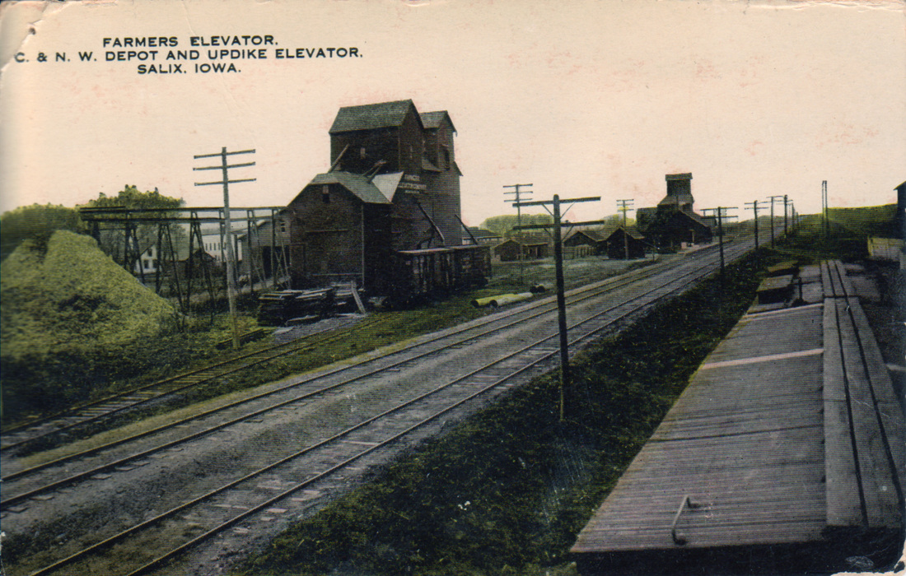

Project Information & Footprint
Awaiting Verified Information
The current promotional website for the project (salix-data-center.com) relies on generic, vague assurances rather than concrete guarantees. Much of the information provided there is not backed by cited data or firm infrastructural studies.
We are actively researching the true infrastructural demands and ecological impact of the proposed data center. Below is a realistic comparison of projected resource demands based on similar regional projects and industry data.
Resource Demands & Heritage Impact
🌾 Preserving Salix's Agricultural Heritage

Farmers Elevator, C. & N. W. Depot, and Updike Elevator in Salix, Iowa.
Salix was platted around 1868 with the arrival of the railroad[a]. Our town's history is deeply rooted in the land. When a devastating fire swept through the business district in October 1892, these grain elevators were among the only structures left standing, serving as a testament to our agricultural backbone[a]. The proposed 900-acre industrial footprint threatens to pave over this rich farming heritage, trading generational farmland for massive corporate water and power consumption.
💧 Water Usage & Logistical Challenges
Data centers require massive amounts of water for cooling. For context, a similar data center project is proposed in Palo, Iowa, on roughly 500 acres. Public records show this facility is estimated to draw 14 million gallons of water per day directly from the Cedar River[b].
To put that staggering volume into perspective, the average day demand for water for the entire city of Sioux City is 13.75 million gallons per day[c].
The proposed Salix site is nearly double the size at 900 acres[d], suggesting an even higher demand. Furthermore, the Palo facility is located directly on top of a river to support its intensive water needs[b]. The Salix site is located miles away from the Missouri River, which creates massive logistical hurdles and severely threatens the local aquifer.
⚡ Energy Consumption & Hidden Water Costs
Data centers place an enormous, continuous strain on local power grids. We demand transparency regarding MidAmerican Energy's capacity to serve this 900-acre facility[d]. Crucially, the true water footprint is often hidden in these energy demands. The power plants that generate electricity for data centers consume significantly more water to cool their steam turbines than the data center uses on-site for its own cooling[e].
🔊 Noise Pollution
Industrial HVAC cooling systems and backup generators run 24/7. We are seeking firm, guaranteed noise mitigation strategies to ensure the facility does not disrupt the quiet, rural character of the Siouxland area.
Sources & References
- [a] SalixIowa.com. The Story of Salix.
- [b] Iowa Public Radio (June 2026). Palo City Council advances data center zoning ordinance despite pushback from residents.
- [c] City of Sioux City, Iowa. Utilities: Water Treatment Overview.
- [d] Data Center Map. MidAmerican Salix - Sioux City.
- [e] KETOS (July 2026). Data Center Water Use: Why the Power Plant Uses More.